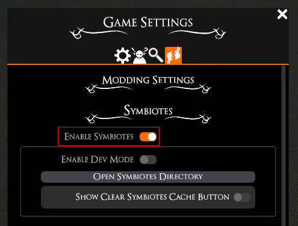

Symbiotes are our first supported way of modding, allowing you, the community, to make character sheets, fancy dice rollers, hand-out notes, and so much more!
Thanks to the API, these Symbiotes can load data directly from the game enabling tight integrations. Additionally, you can load regular websites if you prefer, just using your favorite online resource without having to Alt+Tab out all the time.
To use Symbiotes they first need to be activated in the settings:
This activates the Symbiote side panel to be opened on the right edge of the screen:
Clicking on this opens the Symbiotes panel. In the beginning there are no Symbiotes installed and you'll see a message with a button to open the Symbiote directory. Pressing on that button opens the file explorer at the right location for Symbiotes. You can install a Symbiote simply by dropping the Symbiote in its own folder in here - every Symbiote has to be in its own separate folder to work.
Before downloading any user made mods it's always worth to keep in mind that doing so means running code from unknown people which can come with risks! Usually you'll be fine, especially if you stick to popular projects, but there is always a small but non-zero chance of things going wrong.
Many Symbiotes will be hosted on GitHub, which is a platform for developers to host source code and have a versioning system. A project (in our case a Symbiote - or even several Symbiotes at once) is hosted in a so called "repository". Repositories can have releases set up:

Usually when releases are set up this is the way the developer prefers users to download their project, but when in doubt check the README or get in touch with the developer. Alternatively you can download the entire repository as a .zip:

When downloading as a zip, GitHub puts the code in an extra folder usually called "<name-of-the-project>-main". To use the Symbiotes downloaded this way you need to make sure there is only one folder before the "manifest.json" file:

In this example the "symbiotes-examples-main" folder is too much and has to be removed so that the "Dice Finder" folder is in the Symbiotes directory.

In this example the "symbiotes-examples-main" folder contains the "manifest.json" directly, so it can be moved directly into the Symbiotes directory.
Once you've moved the Symbiotes you want to use into the appropriate folder they should show up in the Symbiote side panel where they can be opened and then used.